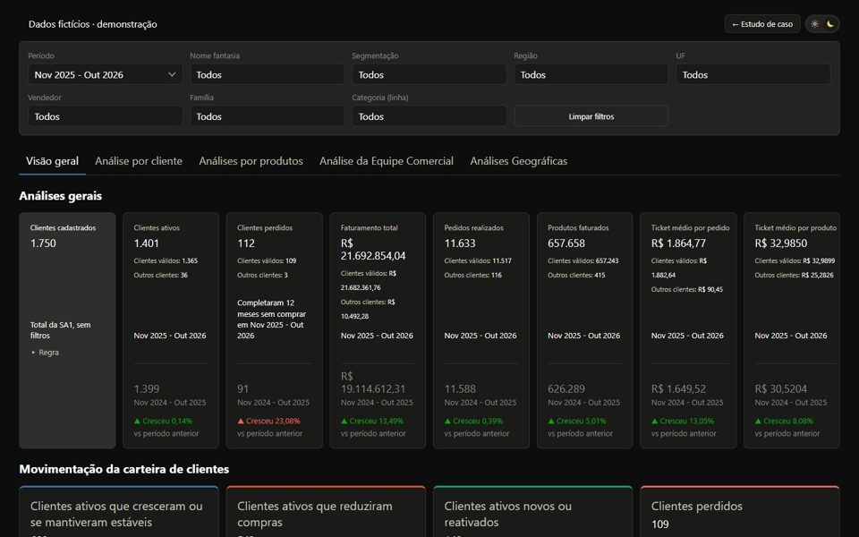

Painel comercial · Sell-in
Diagnóstico Comercial
Doze extrações de ERP e BI viraram um diagnóstico confiável: modelagem fato/dimensão, pipeline de 11 etapas, um painel que calcula tudo no navegador, validação contra o faturamento oficial nos 37 meses e implantação na nuvem com link secreto.